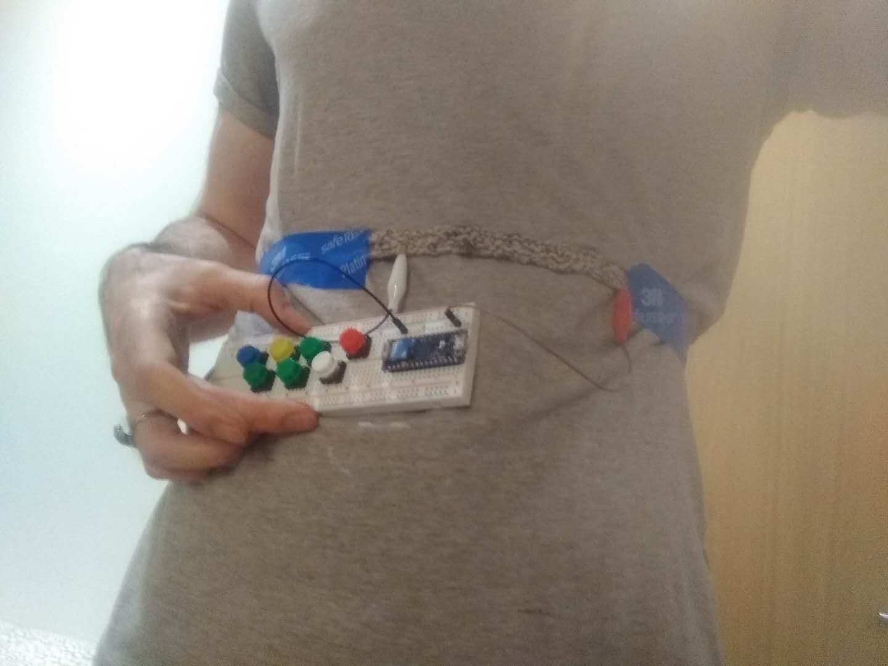

The idea behind this instrument is a stretch sensor that the user can wear around their stomach and use to control MIDI signals to a DAW. The sensor takes all the triads of G Major and plots them to different resistances to determine which triad to send. Additionally, the user can press different buttons to sound different notes on the G scale.
Breathing is a central concept in music, from the necessity to control one's breath when playing something like the trumpet or flute, to the breath marks in musical notation, that I felt compelled to explore it further. Inspired by this project, which uses a stretch sensor to measure one's breathing, I decided I would turn the breathing sensor into an instrument one could control.
Below is my initial sketch concept for the idea.
At first, I was looking for a stretch sensor such as the previos project had used. Adafruit had a stretch sensor made of conductive rubber which looked promising, but unfortunately due to COVID they were out of stock. The rest of the conductive rubber I found was quite expensive, so I set out to find a cheaper way of doing the same thing. Doing some research online dug up this guide for making a stretch sensor using conductive yarn. This seemed like a promising idea, and I thought it would work well if this were something people were supposed to wear. Using yarn made it more like clothing and opened up the idea of integrating it into a wearable, which is also something I had explored in the initial sketch above.
Yarn with stretch. I used this one from Amazon, but I recommend going with a yarn that's equally stretchy but a bit thicker.
Conductive thread. I used this one from Adafruit (bought through Amazon since Adafruit isn't shipping). This yarn was good, but be aware it's very thin and can snap easily. Also, 35 feet is not nearly enough for anything substantial.
My Arduino Nano 33 IOT
Alligator clips: I used these because they have a base which can easily plug into a breadboard.
A few packs of buttons from Sparkfun. These are multicolored, but the color doesn't really matter.
Though I didn't get to use it, this particle sensor from Sparkfun was very cheap and seemed interesting, so I picked it up. I thought maybe I could use to measure pulse, which would be a good complement to breathing.
From the outset, I had a few specific ideas about how I wanted my instrument to sound. I really enjoy very wide and lush sounds, like organs or drone music. The music of Disasterpeace was something I especially enjoyed the thought of emulating.
After more searching, I settled on Radiohead's Motion Picture Soundtrack as the kind of sound I wanted to capture. I checked which instrument the song was using and saw it was a pump organ, so I went looking for pump organ soundfonts in order to emulate one.
Eventually I found this 'descrescendo' pump organ soundfont on polyphone-soundfonts.com. After playing around with it I thought the sound was almost perfect -- the only problem is that the sound font has almost no sustain and quickly faded to silence, which didn't align with the droning sound I wanted to capture.
Because Motion Picture Soundtrack is in the key of G Major, I decided my instrument would use all of the triad chrds in G Major -- these are G Major A Minor, B Minor, C Major, D Major, E Minor, and F# Diminished.
At this point my materials had not arrived due to shipping slowdowns associated with COVID, so I practiced pinpointing the sound with the one thing I did have: my Arduino. Using the accelerometer, I mapped different positions to different chords. Using the noteOn and noteOff functions provided in the MIDI library for Arduino, I explored sending different MIDI signals to the DAW I was using, FL Studio. I found that by using a slight delay of 200 ms or so when looping, the fact that the decrescendo pump organ had no sustain didn't matter as much and wasn't very noticeable, so I got the droning sound I wanted.
Unfortunately, during this process my computer crashed, and I lost most of the documentation I had from that time, as well as the Arduino code I used for the accelerometer. I also lost the use of FL Studio and had to switch to LMMS. LMMS didn't seem to work as well for keeping the droning. I did a little recreation of the sort of sound I was going for with LMMS.
Summing up knitting, I would say this: it's quite easy to get started, but very hard to get a hang of and master. There's definitely a high ceiling for how much you can learn about knitting, one I didn't come close to hitting. Since I only had 35 feet of conductive yarn, I wanted to knit a test swatch to see how stretchy the yarn would be and how everything would feel. Along with this excellent instructinal video for left-handed knitters I used my roommate's book First Time Knitting.
Below is the result from the prototype. It's around 5 inches and was made with 16 cast ons and 2 or 3 rows. Lengthwise it stretched pretty well, so I decided I would model my final sensor on it, but with more cast ons to make it a little longer.
Knitting with the two threads together was tough. The book recommended just holding the threads together so that they would naturally be knit together, but the different consistency of the stretchy yarn and the not stretchy, clingy conductive thread meant that there was a lot more conductive thread going into the sensor than the other yarn. In fact, I ran out of conductive thread only using 18 cast ons and 2 or three rows. Below, it's shown with the alligator clips attached.
Unfortunately, my Arduino broke during this step. However, while testing the sensor there were a few things I noticed right off the bat.
1. It wasn't very good. I wasn't totally surprised by this, because I'd identified some problems with the sensor while knitting it.
2. I didn't have any resistors. This made the readings from the sensor both unreliable and not varied enough. If I had a few choice resistors to put into my circuit, I'm sure I would've gotten better results from analog read.
3. The yarn was too thin. If you're going to knit something like this, I highly recommend using much thicker yarn with the conductive thread. The very thing yarn I had here just meant that all the conductive thread was right next to itself, which was counter-productive to what I wanted to do.
For this version, I taped the stretch sensor around my waist, and I taped the breadboard with Arduino and buttons installed to my shirt. For a final version, I'd definitely want something seated in a pocket or sewn on as a patch (that would work best for buttons).
I think this idea and this sensor definitely have potential, even if they're not quite there yet. What I would really like to do next, apart from tidying up the sensor, is send MIDI notes on different channels so that I could have multiple sounds coming through at once. For example, the pump organ sound font for the chords or the drone and a violin for the button seems like a combination I'd be very interested in trying out.
Though this doesn't currently use bluetooth/wifi, I'd also be really interested in adding those features since this instrument would be much easier to play if it didn't have to be connected to the computer and could run on external power.
Comments? Questions? Concerns? Email me here!